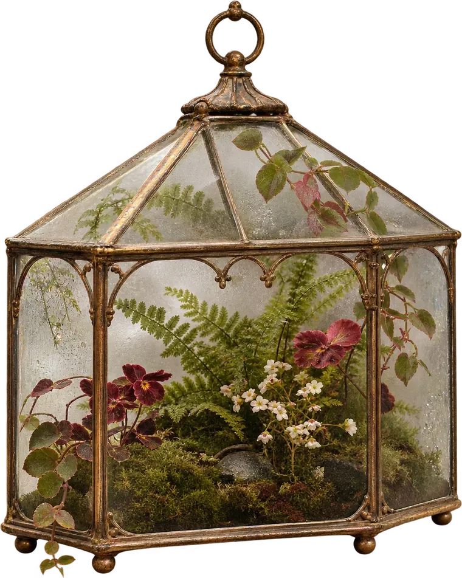
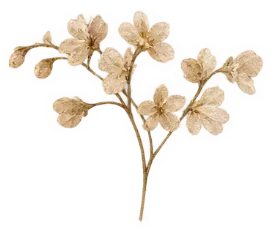
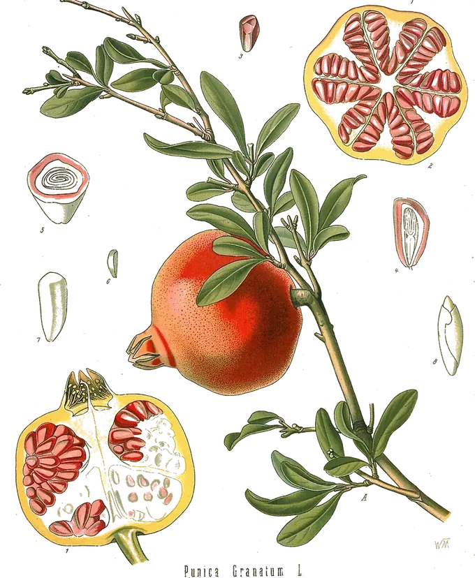
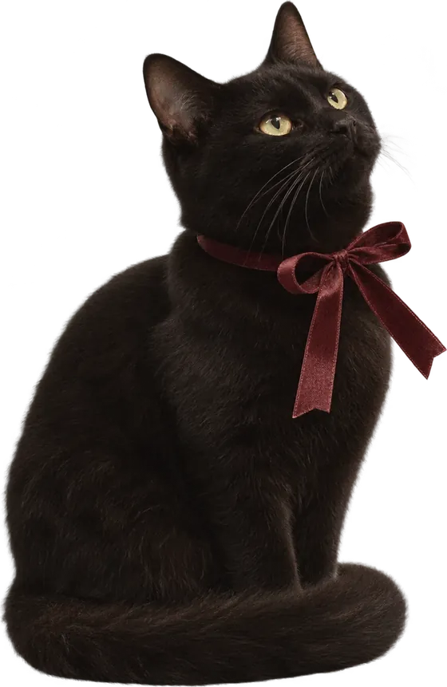

sobre mim
Prazer, eu sou a Lo.
Lorine Fonseca no crachá, Lo para quem chega perto. Sou estudante de Publicidade e Propaganda, trabalho com design e comunicação e estou construindo meu próprio espaço no universo criativo.
Antes de ser publicitária, sou alguém que gosta de observar, imaginar, experimentar, questionar e encontrar beleza em coisas que nem sempre recebem atenção.



ficha de herbário
Alguns dados sobre mim.
- nome
- Lorine Fonseca
- pode chamar de
- Lo
- estudo
- Publicidade e Propaganda
- hoje
- Comunicação interna na DENSO Brasil
- trabalho com
- design, publicidade e conteúdo
- idiomas
- português e inglês intermediário
- câmera
- Canon PowerShot e celular
- trilha sonora
- música antiga e artistas fora dos top hits
fora do expediente
O que eu faço quando ninguém pede.
 Fotografia
Fotografia Aquarela e desenho
Aquarela e desenho
Cadernos e colagem Música
Músicacadernos
Coisas que me inspiram.
Uma coleção de referências, afetos e pequenas obsessões visuais. Algumas ideias precisam de espaço para florescer.





a trilha sonora da minha vida
Trilha sonora de uma vida em construção
A música me moldou como pessoa. Ela está no meu processo criativo e no meu processo de cura: eu não vivo sem, e escuto enquanto trabalho. Gosto de música antiga e de artistas fora dos top hits, que emocionam pela letra e pela composição.
na infância eu achava que não gostava de música. na adolescência, me descobri inteira ao lado dela.
estante · toque num disco para ouvir
Sem login no Spotify, cada faixa toca uma prévia de 30 segundos.
próximas páginas
Este caderno ainda está sendo escrito.
Em breve, mais sobre a minha trajetória, as marcas com quem trabalhei e fotografias minhas.